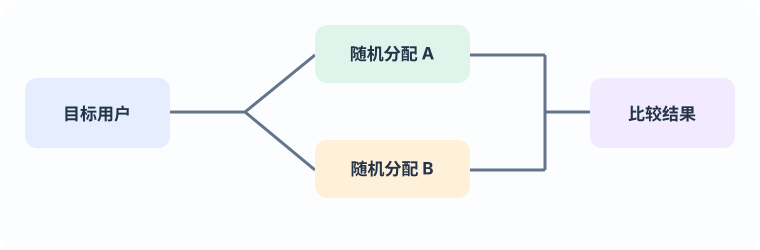

第25章：A/B测试实战
大家好，我是你们的讲师。在互联网行业，A/B测试可以说是统计学最广泛、最直接的应用场景——没有之一。从按钮颜色到算法模型，从文案措辞到推荐策略，几乎所有产品决策都可以通过 A/B 测试来验证。但现实是，大量所谓的 "A/B 测试" 在统计上是站不住脚的。提前偷看结果、样本量不足、多重比较不做校正——这些错误每天都在顶级互联网公司里上演。
本章学习目标
- 实验设计
- 样本量计算
- 显著性检验

交互实验：最小可检测提升与样本量
使用正态近似演示基准转化率 10% 时，绝对提升目标对每组样本量的影响。
交互控件加载后，可调整参数并观察统计量的变化。
本章的目标是让你掌握一个生产级的 A/B 测试框架：从实验设计到样本量计算，从检验方法选择到决策规则制定，再到最常见的踩坑点。
25.1 A/B测试完整框架
一个规范的 A/B 测试应该包含以下8个步骤。跳过任何一个步骤，都可能让整个实验前功尽弃：
- 定义核心指标：明确你要提升什么（如点击率、转化率、留存率），并区分"核心指标"和"代理指标"
- 确定最小效应量（MDE）：多大的提升才值得上线？这需要业务判断，而非统计决定
- 计算最小样本量：在给定显著性水平（通常 α=0.05）和统计功效（通常 1-β=0.80）下，需要多少样本？
- 随机分流设计：确保两组在实验开始时是可比的——不仅看人口统计学特征，还要关注"不可观测因素"
- 运行实验：严格遵守预定时长，期间不要偷看结果
- 效果检验：根据指标类型选择恰当的统计检验方法
- 实际显著性判断：统计显著不等于业务可行——考虑成本、风险和工程复杂度
- 决策与复盘：无论结果如何，记录实验并从中学习
25.2 最小样本量计算
样本量计算是 A/B 测试中最容易被忽视的环节。"样本越多越好"的想法既浪费流量又可能拖慢实验节奏。正确的做法是根据预期效应量和统计要求精确计算。下面以最常见的"转化率双比例 z 检验"为例：
import numpy as np
import scipy.stats as stats
from statsmodels.stats.power import TTestIndPower, zt_ind_solve_power
from statsmodels.stats.proportion import proportion_effectsize
# === 样本量计算函数 ===
def calculate_ab_sample_size(base_rate, min_detectable_effect,
alpha=0.05, power=0.80, two_sided=True):
"""
计算 A/B 测试最小样本量（每组）
参数:
base_rate: 对照组基准转化率（如 0.10 = 10%）
min_detectable_effect: 最小可检测的绝对提升（如 0.01 = 提升1个百分点）
alpha: 显著性水平（默认为0.05）
power: 统计功效（默认为0.80）
two_sided: 是否双尾检验
返回:
每组所需样本量
"""
# 计算效应量（Cohen's h）
effect_size = proportion_effectsize(
base_rate, base_rate + min_detectable_effect)
# 计算所需样本量
# 使用正态近似
z_alpha = stats.norm.ppf(1 - alpha / 2 if two_sided else 1 - alpha)
z_beta = stats.norm.ppf(power)
# 两组平均转化率
p_bar = (base_rate + base_rate + min_detectable_effect) / 2
q_bar = 1 - p_bar
n_per_group = (
(z_alpha * np.sqrt(2 * p_bar * q_bar) +
z_beta * np.sqrt(base_rate * (1 - base_rate) +
(base_rate + min_detectable_effect) *
(1 - base_rate - min_detectable_effect))) ** 2
/ min_detectable_effect ** 2
)
return int(np.ceil(n_per_group))
# === 实际案例：电商转化率优化 ===
# 当前转化率: 8.5%，期望提升到 10%（绝对提升1.5个百分点）
base = 0.085
mde = 0.015
n_needed = calculate_ab_sample_size(base, mde, alpha=0.05, power=0.80)
print(f"基准转化率: {base*100:.1f}%")
print(f"最小可检测提升: {mde*100:.1f} 个百分点")
print(f"每组所需样本量: {n_needed:,}")
print(f"总样本量: {n_needed * 2:,}")
# 不同场景的样本量对比
scenarios = [
("提升 0.5pp", 0.085, 0.005),
("提升 1.0pp", 0.085, 0.010),
("提升 1.5pp", 0.085, 0.015),
("提升 2.0pp", 0.085, 0.020),
("提升 3.0pp", 0.085, 0.030),
]
print("\n不同效应量下的样本量需求（α=0.05, 1-β=0.80）:")
print(f"{'场景':<15} {'基准转化率':<12} {'绝对提升':<10} {'每组样本量':<12}")
print("-" * 50)
for name, br, mde_val in scenarios:
n = calculate_ab_sample_size(br, mde_val)
print(f"{name:<15} {br*100:<8.1f}% {mde_val*100:<8.1f}pp {n:<10,}")这段代码清晰地展示了样本量和效应量之间的反比关系——你想检测的效应越小，所需的样本量就呈指数级增长。例如，在8.5%的基准转化率下，要检测0.5个百分点的提升，每组需要超过6万个样本；而如果只关心2个百分点的提升，每组只需要不到4000个样本。
25.3 检验方法选择
不同的指标类型需要不同的检验方法。错误的检验方法会得到错误的结论：
| 指标类型 | 举例 | 推荐检验方法 | 注意事项 |
|---|---|---|---|
| 二值指标（比例） | 转化率、点击率、留存率 | 双比例 z 检验 / 卡方检验 | 样本量足够大时正态近似有效 |
| 连续指标（均值） | 客单价、停留时长、LTV | 独立样本 t 检验 / Welch t 检验 | 检查方差齐性，不等方差用 Welch |
| 计数指标 | 购买次数、视频观看数 | 泊松回归 / 负二项回归 | 如果方差远大于均值，用负二项 |
| 有序分类指标 | 满意度评分（1-5星） | Mann-Whitney U 检验 | 不要直接对有序变量做 t 检验 |
| 比率指标 | 每次会话收入 | Bootstrap 检验 | 比率分布通常极度偏态 |
| 多组比较 | A/B/C/D 四组 | ANOVA + Tukey HSD | 多重比较必须校正 |
25.4 统计检验实战代码
import numpy as np
import scipy.stats as stats
import statsmodels.stats.api as sms
from statsmodels.stats.proportion import proportions_ztest, confint_proportions_2indep
# 设置随机种子
np.random.seed(2024)
# === 模拟实验数据 ===
# 对照组: 10000 人中有 850 人转化 (8.5%)
# 实验组: 10000 人中有 920 人转化 (9.2%)
n_control = 10000
n_treatment = 10000
conv_control = 850
conv_treatment = 920
rate_control = conv_control / n_control
rate_treatment = conv_treatment / n_treatment
lift = (rate_treatment - rate_control) / rate_control
print(f"=== A/B 测试结果 ===")
print(f"对照组转化率: {rate_control:.4f} ({conv_control}/{n_control})")
print(f"实验组转化率: {rate_treatment:.4f} ({conv_treatment}/{n_treatment})")
print(f"相对提升: {lift*100:.2f}%")
print(f"绝对提升: {(rate_treatment - rate_control)*100:.2f} 个百分点\n")
# === 1. 双比例 z 检验 ===
counts = np.array([conv_control, conv_treatment])
nobs = np.array([n_control, n_treatment])
z_stat, p_value = proportions_ztest(counts, nobs, alternative='two-sided')
# 置信区间
ci_low, ci_upp = confint_proportions_2indep(
conv_treatment, n_treatment, conv_control, n_control,
compare='diff', alpha=0.05)
print(f"=== 统计检验 ===")
print(f"Z 统计量: {z_stat:.4f}")
print(f"p 值: {p_value:.6f}")
print(f"转化率差异的 95% CI: [{ci_low:.4f}, {ci_upp:.4f}]")
print(f"统计结论: {'显著 (p < 0.05)' if p_value < 0.05 else '不显著 (p >= 0.05)'}")
# === 2. 效应量 ===
# Number Needed to Treat (NNT) —— 需要多处理多少人才能多获得一次转化
nnt = 1 / (rate_treatment - rate_control)
print(f"\nNNT (Number Needed to Treat): {nnt:.1f}")
print(f"即: 每处理 {nnt:.1f} 个用户，就能多获得1次转化")
# === 3. 事后功效分析 ===
from statsmodels.stats.power import NormalIndPower
effect = rate_treatment - rate_control
pooled_std = np.sqrt((rate_treatment * (1 - rate_treatment) / n_treatment +
rate_control * (1 - rate_control) / n_control))
z_power = abs(rate_treatment - rate_control) / pooled_std
power_analysis = NormalIndPower()
achieved_power = power_analysis.power(
z_power, nobs1=n_control, alpha=0.05, alternative='two-sided')
print(f"\n事后统计功效: {achieved_power:.4f}")
print(f"建议: {'功效充足' if achieved_power >= 0.80 else '功效不足，需要扩大样本量'}")25.5 决策规则：统计显著性与实际显著性
很多团队犯的错误是：p < 0.05 就直接上线了。这是典型的"统计显著性 = 业务价值"谬误。一个统计显著的结果可能实际意义很小——比如转化率从 8.500% 提升到了 8.505%，虽然 p = 0.03，但0.005个百分点的提升可能连开发成本都收不回来。以下决策矩阵可以帮助你系统思考：
| 统计显著（p < α） | 统计不显著（p ≥ α） | |
|---|---|---|
| 效应量大 | 上线！ 效应可信且值得投入 | 考虑扩大样本量 再跑一轮实验 |
| 效应量中等 | 综合评估后上线 关注成本效益比 | 需要更多证据 实验设计可能有问题 |
| 效应量小 | 谨慎 真实效应可能比观测值小 | 放弃 即使有效应也不值得投入 |
| 效应量为负 | 不上线！ 改版有害 | 保持现状 新版本没有优势 |
25.6 常见错误与反模式
以下是 A/B 测试中最常见、也最危险的错误：
25.6.1 Peeking Problem（提前偷看）
一家电商平台在做首页改版 A/B 测试时，产品经理在实验开始后的第3天就迫不及待地去看结果。当时实验组转化率高出对照组12%，p = 0.03。团队兴高采烈地全量上线了新版本。结果一周后，总体转化率反而比改版前下降了5%。怎么回事？
原来第3天的"显著效果"完全是一时的流量波动——那天恰逢周末，实验组恰好分到了更多高消费力用户。如果他们等到预定的14天实验期结束再检查，就会看到最终结果其实是不显著的。这就是 Peeking Problem 的典型表现：如果你在实验过程中反复查看结果，当 p 值首次低于 0.05 时就停止实验，那么你的实际 I 类错误率可能高达 20-30%，而不是名义上的 5%。
解决方案：预定实验时长和样本量，除非有严重的负向影响（如收入骤降），否则不要在达到预定阈值前看结果。如果一定要做序贯检验，请使用专业的序贯分析方法（如 group sequential design 或 always valid p-values）。
25.6.2 其他常见错误
- 样本量不足就启动实验：低功效的实验即使得出不显著的结果，也无法区分"没有效应"和"样本不够大"
- 忽略新奇效应（Novelty Effect）：用户对新功能的好奇心可能导致短期效果被高估。建议延长实验周期或使用周同比对
- 网络效应污染：社交产品的实验组和对照组用户会互相影响。这种情况下需要考虑集群随机化
- 多重比较陷阱：检验10个指标，其中一个显著的概率是
1 - (1-0.05)^10 ≈ 40%。务必使用 Bonferroni 或 FDR 校正 - 分流不均：检查随机化是否成功——年龄、性别、用户等级等特征应在两组间均衡分布
- 忽略用户异质性：总体效果不显著≠对所有用户都没有效果。尝试做亚组分析，但要注意多重比较问题
25.7 本章小结
A/B 测试是统计学在互联网行业最闪亮的应用，也是最容易踩坑的地方之一。一个严谨的 A/B 测试需要你在实验设计阶段就考虑好样本量、效应量、检验方法和决策规则。记住：统计显著 ≠ 业务重要，p < 0.05 不是终点而是起点。真正有价值的 A/B 测试不是"证明我赢了"，而是"我学到了什么"。
下一章我们将进入一个更广阔的领域——机器学习中的统计学。你会看到，前面学过的所有统计概念（偏差-方差权衡、过拟合、交叉验证、正则化）都是机器学习的基础。统计学和机器学习并不是两门独立的学科，而是同一枚硬币的两面。
本章小结
实验的统计设计与产品指标同样重要，显著不等于值得上线。